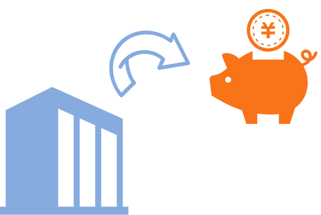
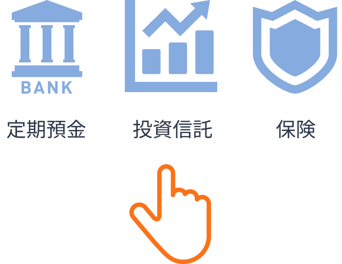
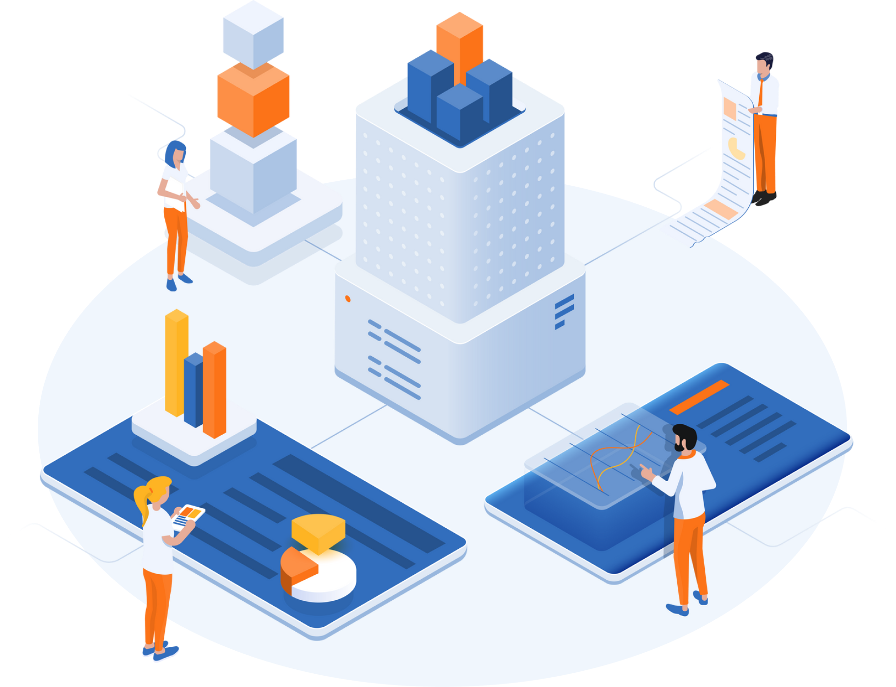
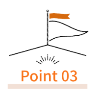
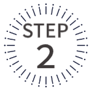
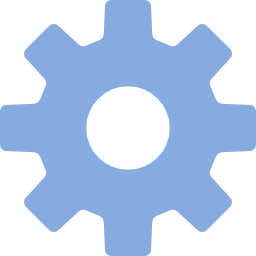

小さな会社でも導入できる
企業型確定拠出年金
-
社員
1名〜OK -
専門社労士が
サポート -
導入後も
ずっと伴走
中小企業でも使いやすい退職金制度「企業型DC」を、制度設計から申請まで伴走支援します。

中小企業が導入で悩みやすいポイント
-
社員数が少ないと
導入できないのでは？ -
制度の説明や
手続きが難しそう -
将来の支払いが心配
-
手間を増やしたくない
導入の不安をまとめて解決します！
専門家が伴走する 企業型DC導入伴走サポート が、制度選びから申請まで支援します。
企業型DCとはどんな制度？
企業型DC（企業型確定拠出年金、401k）は、
会社が拠出した掛金を従業員が自ら運用し、60歳以降に受け取れる“企業型の資産形成制度”です。
-
会社が積み立てる
毎月、従業員の専用口座へ
会社が拠出- 会社の経費として計上OK
- 社会保険料の対象外
-
従業員が育てる
積み立てたお金を、
自分で商品選択 -
60歳以降に受け取る
年金 or 一時金として受け取り
- 運用益は非課税
- 受取額は成果次第
動画解説＆資料ダウンロード
企業型DCを理解するための基礎解説動画
退職金制度の種類や特徴を整理しながら、 企業型DCの役割やメリットをわかりやすくまとめた内容です。
小規模企業・社長ひとりの会社にこそ導入がおすすめの理由
会社負担で “社長自身” の老後資金を準備できる
会社の経費として掛金を拠出でき、社長個人では作りにくい退職金を会社で用意できます。
税制メリットが圧倒的に大きい
掛金は全額損金。法人税・社会保険料の最適化にもつながります。
拠出限度額が高く、iDeCoより有利に資金準備ができる
年間の積立枠が大きく、個人のiDeCoより効率的に老後資金を増やせます。
安心して導入できるサポートの仕組み
-
社員説明サポート体制
経営者がすべてを背負わなくていい“伴走型サポート”。
社労士が社員説明会に同席し、資料・動画・Q&Aまでフルセットでサポートします。 -

導入手続き・規約整備までワンストップ
厚生局への申請、就業規則の改訂、制度設計書の整備まで、すべて“代行サポート”。
「やりたいけど手続きが複雑そう…」という不安を解消します。 -

導入後も安心の運用フォロー
制度導入後も、掛金変更・人事異動対応・運用フォローを継続支援。
導入して終わりではなく、“継続的に制度を育てるパートナー”です。
導入までの流れ
-
お問い合わせ・ご相談
現状の退職金制度の有無、従業員構成、財務状況、導入目的をヒアリングし、
最適な制度タイプを整理します。 -


制度設計
掛金水準、対象範囲、制度内容を具体化し、企業様の経営方針にフィットする設計案を作成します。
あわせて、従業員説明会用の資料や就業規則改定案も準備します。 -
従業員説明・同意取得
制度内容の周知と説明会を実施し、従業員の理解促進をサポート。
従業員代表の同意、就業規則改定の周知、必要書類の押印など法定の手続きを確実に実施します。 -
申請手続き・導入準備
企業型DC規約の作成から厚生局への申請までを一括でサポート。
申請後は事務手続きを社内で運用できるよう、マニュアル整備や事務フロー構築を支援します。 -
運用開始・アフターサポート
従業員の個人口座開設、商品選定ガイダンス、初回拠出の設定まで伴走。
制度開始後の実務や教育面も継続的にフォローします。

まずはご相談ください
御社に最適な制度設計をご提案します。